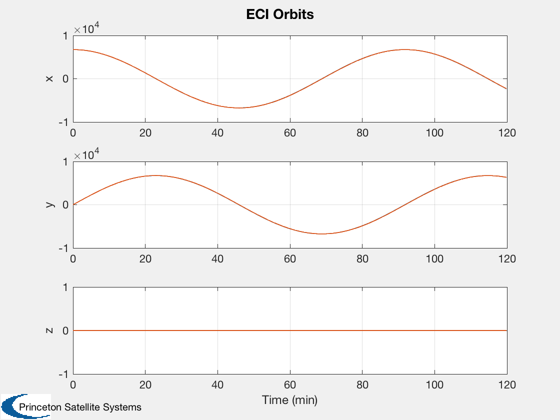
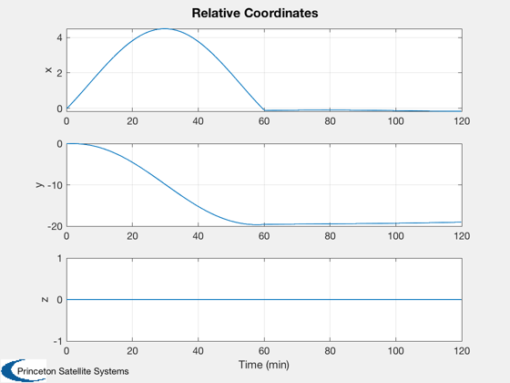
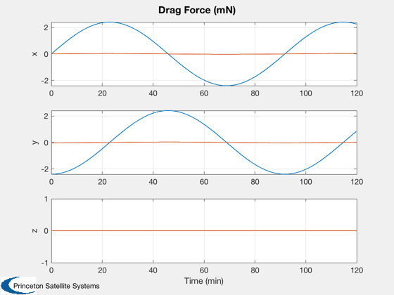
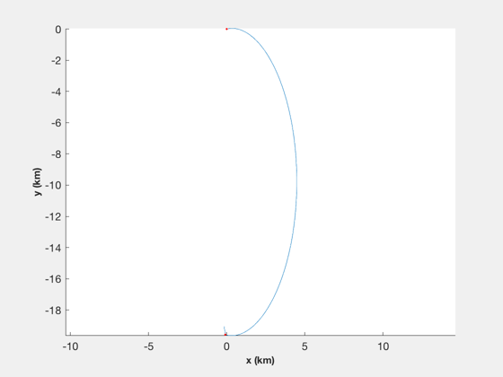

Orbit separation simulation with discrete delta-Vs
Simulates a discrete phasing maneuver in the absolute frame. Includes a simple drag model and point-mass gravity. The simulation runs for twice the desired transfer time.
Contents
%------------------------------------------------------------------------------- % Copyright 2017 Princeton Satellite Systems, Inc. All rights reserved. %------------------------------------------------------------------------------- % Since version 2017.1 %--------------------------------------------------------------------------
Constants and Parameters
%-------------------------- sma = 6740; % km inc = 0; % inclination dSep = 20; % km jD0 = JD2000; tTrans = 60*60; % s thrust = 5; % N mass = 12; % kg degToRad = pi/180; mu = 3.9860046e5; useDrag = false;
Initialize the data
%--------------------- [r1,v1] = El2RV( [sma inc 0 0 0 0], [], mu); [r2,v2] = El2RV( [sma inc 0 0 0 0], [], mu); delTheta = dSep/sma; elT = [sma inc 0 0 0 -delTheta]; [rT,vT] = El2RV(elT, [], mu); dV = DVTarget(r1,v1,rT,vT,tTrans); dVa = dV.a*1e3; dVb = dV.b*1e3; dVMag = Mag(dVa)+Mag(dVb); tBurn = dVMag/2*mass/thrust; Porb = Period(sma); dTSim = Porb/300; tOrbit = 0:dTSim:2*tTrans; nSim = length(tOrbit); fprintf('Total delta-V for maneuver: %g m/s\n',dVMag); fprintf('Thrust: %g N\n',thrust); fprintf('Burn time per maneuver: %g s\n',tBurn); % Initial state x1 = [r1;v1]; x2 = [r2;v2]; t = 0; % Initialize the arrays %---------------------- x1Plot = zeros(6,nSim); x2Plot = zeros(6,nSim); d1Plot = zeros(3,nSim); d2Plot = zeros(3,nSim);
Total delta-V for maneuver: 6.53174 m/s Thrust: 5 N Burn time per maneuver: 7.83809 s
Generate the two orbits using numerical integration
nBurn = ceil(tBurn/dTSim); f = tBurn/(nBurn*dTSim); acc = thrust/mass*1e-3; % km/s2 accels = zeros(3,nSim); tP = floor(tTrans/dTSim); for k = 1:nBurn accels(:,k) = f*acc*Unit(dV.a); accels(:,tP+k) = f*acc*Unit(dV.b); end kOn = (Mag(accels)~=0); for k = 1:nSim % Plotting %--------- x1Plot(:,k) = x1; x2Plot(:,k) = x2; % Calculate drag disturbance area = [5; 0.06]; d1 = AeroDragForce( x1, area(1) ); d2 = AeroDragForce( x2, area(2) ); d1Plot(:,k) = d1; d2Plot(:,k) = d2; if ~useDrag d1 = 0*d1; d2 = 0*d2; end % Propagate the orbits %--------------------- x1 = RK4( @FOrb, x1, dTSim, t, 'car', d1*1e-3/mass, mu ); x2 = RK4( @FOrb, x2, dTSim, t, 'car', d2*1e-3/mass+accels(:,k), mu ); % Update the time %---------------- t = t + dTSim; jD = jD0 + dTSim/86400; end % Relative coordinates r1 = x1Plot(1:3,:); v1 = x1Plot(4:6,:); r2 = x2Plot(1:3,:); d = RelativeCoord( r1, v1, r2 );
Plotting
%--------- Plot2D( tOrbit/60, [r1; r2], 'Time (min)', {'x','y','z'}, 'ECI Orbits',... 'lin',{[1 4],[2 5],[3 6]}); Plot2D( tOrbit/60, d, 'Time (min)', {'x','y','z'}, 'Relative Coordinates'); Plot2D( tOrbit/60, [d1Plot; d2Plot]*1e3, 'Time (min)', {'x','y','z'}, 'Drag Force (mN)',... 'lin',{[1 4],[2 5],[3 6]}); NewFig('Relative Orbit 3D') plot3( d(1,:), d(2,:) ,d(3,:) ) grid XLabelS('x (km)') YLabelS('y (km)') ZLabelS('z (km)') view(0,90) hold on iOn = find(kOn); plot3( d(1,iOn), d(2,iOn) ,d(3,iOn),'r.' ) axis equal %--------------------------------------
grid =
0 0 1 0 0 0 1 0
0 0 0 1 0 1 0 0
0 0 0 0 0 0 0 0
0 0 0 0 0 1 1 0
0 0 0 0 0 0 0 1
0 0 0 0 0 0 0 0
0 0 0 0 0 1 0 0
0 1 0 0 0 1 1 1
   